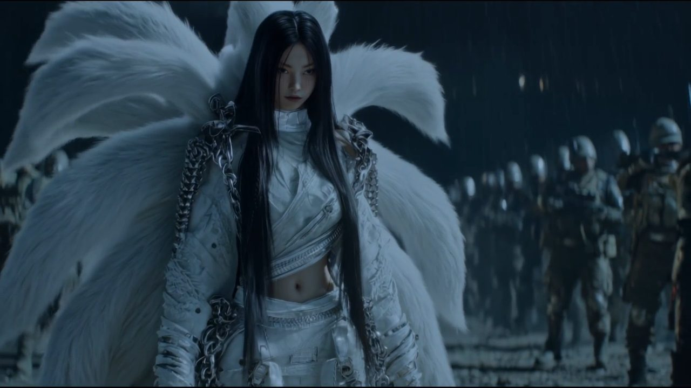
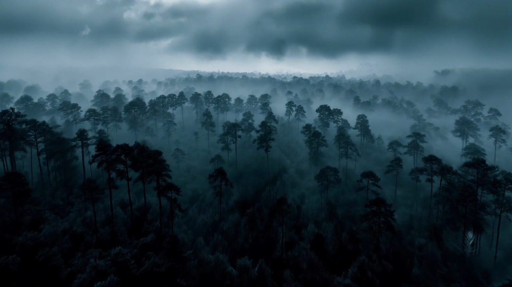
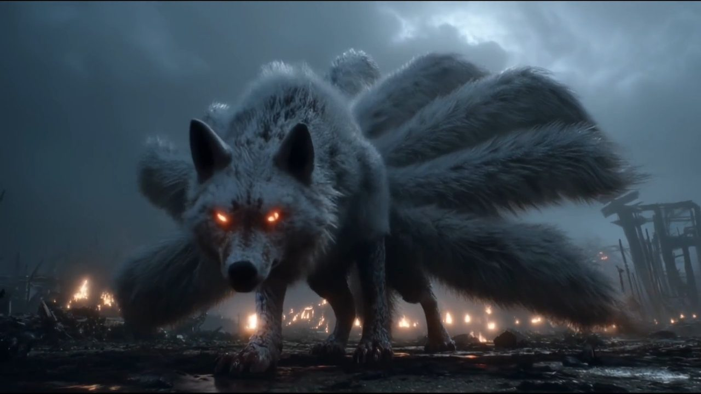
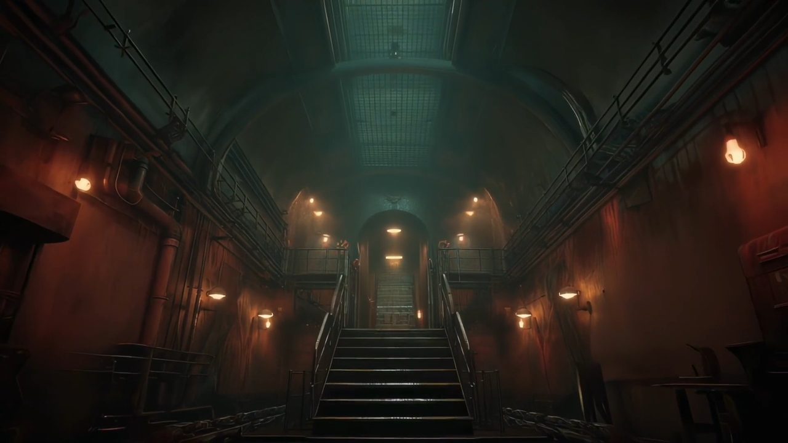

AI 단편 · 2025
구미호
구미호: 사라진병기

줄거리
오랜 전쟁 중인 나라가 최종 병기로 '구미호'를 씁니다. 평소에는 꼬리 아홉 달린 여인이지만, 적진 한복판에 떨어뜨리면 거대한 여우로 변해 누구도 살려 두지 않습니다. 그런데 구미호가 아군 병사들까지 홀려 간을 빼먹기 시작하자, 군은 귀한 전력을 처형하지 못하고 지하 9구역에 가둡니다.
그 구미호가 어젯밤 탈출했다는 무전이 들어온 막사에서 두 병사가 지난 일을 이야기합니다. 대화가 회상 장면으로 이어지다가, 마지막에 한 병사의 눈이 붉게 변합니다.


